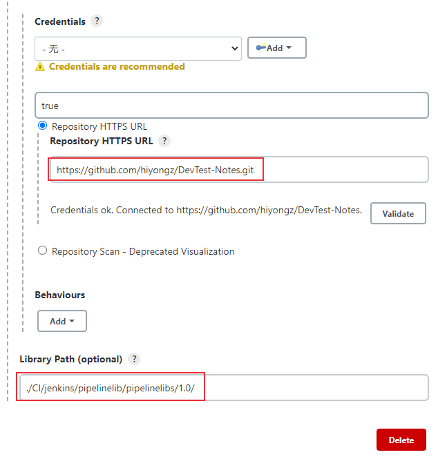

通常情况下多个流水线项目需要使用相同的功能，流水线支持创建 “共享库” ，把这些公共的方法类定义在一个仓库中，使多个pipeline项目可以共享这些库，这有助于减少代码冗余。
下面来介绍Jenkins如何配置和使用Pipeline共享库。
Pipeline 共享库定义
共享库（shared library）是一些 Groovy 脚本的集合，可以在外部源代码控制仓库（Git 或者Subversion）中托管Pipeline共享库。配置好共享库之后，可以在Pipeline项目中对它进行调用。
目录结构
将共享库放到SVN或者Git服务器上，其目录结构如下：
1 | (root) |
src 目录和标准的Java源代码目录一样，主要提供类库，存放具体实现方法。
vars 目录存放脚本文件的变量可以在pipeline中使用，也就是全局变量，文件的名称是Pipeline中变量的名称。
resources 目录存放一些配置文件，允许从外部库使用 libraryResource 步骤来加载相关的非groovy文件。目前，内部库不支持此功能。
创建共享库
目录结构如下
1 | \---1.0 |
MyLib.groovy脚本内容：
1 | // 获取时间 格式：20201208200419 |
log.groovy脚本：
1 | def info(message) { |
配置 Global Shared Libraries
进入Manage Jenkins » Configure System » Global Pipeline Libraries，点击Add
下面介绍SVN和GitHub两种共享库配置方法。
SVN库配置
SVN源码库svn://192.168.30.8/project/pipelinelibs 下存放上面介绍的共享库。
GitHub库配置
也可以将共享库放到github上，路径为 DevTest-Notes/CI/jenkins/pipelinelib/pipelinelibs/ 。
和SVN配置方法类似，选择GitHub

其它Git仓库配置方法类似。
使用共享库
配置好共享库后就可以在pipeline中调用其中提供的方法了，新建一个pipeline库，脚本如下：
1 | // @Library('pipelinelibs@1.0') _ // SVN库 |
上述脚本中的下划线 _可以省略，如果 @Libray 后面紧接的一行不是 import 语句，就需要这个下划线。
构建日志如下：
1 | [Pipeline] Start of Pipeline |
参考文档：
疾如风，徐如林，侵略如火，不动如山，难知如阴，动如雷霆。——《孙子兵法》
本文标题:持续集成：Jenkins Pipeline共享库定义和使用
文章作者:hiyo
文章链接:https://hiyongz.github.io/posts/continuous-integration-jenkins-for-pipeline-shared-libraries/
许可协议:本博客文章除特别声明外，均采用CC BY-NC-ND 4.0 许可协议。转载请保留原文链接及作者。